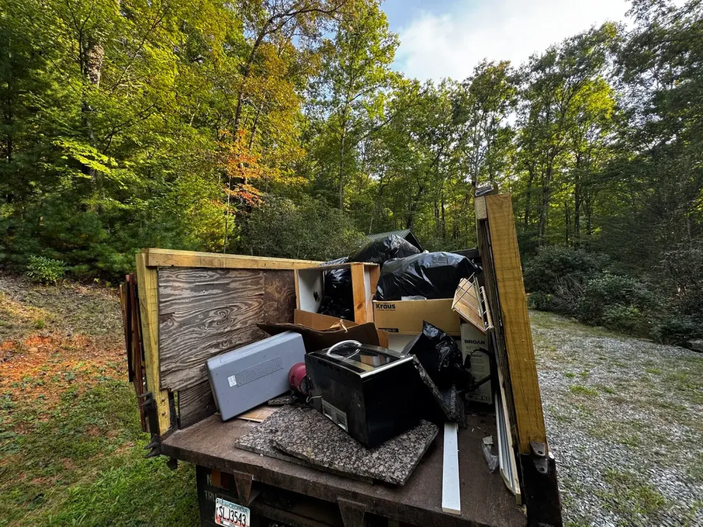

Junk Removal in Gwinnett County, GA
Nearly a million people and six towns that have almost nothing in common. We quote each one for what it actually is, and the price he quotes is the price you pay.
“Fast work. Great attitude. Excellent communication. Someone you want to work with”
Kevin · Google ReviewA Snellville Basement and a Suwanee Garage Are Not the Same Job.
- Gwinnett is Georgia’s biggest county, built out through the ’80s, ’90s, and 2000s. Now those homes are hitting the renovation years all at once, with new kitchens, cleared basements, and move-outs countywide. It never stops.
- Tony runs Gwinnett regularly, and the north end around Suwanee and Sugar Hill is closest to home. Call before noon and same-day is usually on the table.
- Six towns, six different kinds of house. We ask which one before we put a number on it.
- The owner is on every job. Firm price up front, and that’s the price you pay. No climb in the driveway.
Here’s the whole county he covers.
Junk Removal Across All of Gwinnett County
Suwanee and Sugar Hill anchor the north end, and the county runs all the way down to Lawrenceville and Snellville. We cover it. Start with Suwanee below.
Also covering, all across Gwinnett County:
- Mall of Georgia
- Peachtree Industrial
What Tony Hauls Across Gwinnett County.
A single appliance, or forty years of a basement. Gwinnett’s established subdivisions keep him busy year-round. Tap any card for the details.

Junk Removal
The pile from a basement, a garage, or a whole renovation. One trip, all of it.
Junk Removal
- Furniture & household items
- Electronics & mattresses
- Yard debris & scrap
- Same-day usually available

Garage Cleanouts
Thirty years of a suburban garage, floor to ceiling. Cleared in one visit.
Garage Cleanouts
- Full garage cleared in one trip
- Tools, equipment & boxes
- Old furniture & appliances
- Pre-sale & renovation ready

Appliance Removal
Kitchens and laundry rooms getting updated all over the county. Disconnected, carried out, gone.
Appliance Removal
- Refrigerators & freezers
- Washers, dryers & dishwashers
- Stoves & microwaves
- Refrigerant handled properly

Estate Cleanouts
Older Lawrenceville homes and mid-century properties. Full households cleared, handled with care.
Estate Cleanouts
- Full household clearance
- Furniture, appliances, personal items
- Donates & recycles before landfill
- Respectful & discreet

Commercial Removal
The Peachtree Industrial and Buford Highway corridors. Office and retail turnover cleared fast.
Commercial Removal
- Office & retail cleanouts
- Old fixtures & furniture
- Property-management turnovers
- Flexible scheduling
See the full list on the services page, or call and we’ll tell you straight. (404) 632-9165
Same crew, all of it. Here’s how Gwinnett actually breaks down.
Georgia’s Biggest County Is Really Six Different Ones.
About 975,000 people live in Gwinnett, more than any other county in Georgia. Almost nothing about it is uniform.

Suwanee Is Not Norcross Is Not Snellville
The north end around Suwanee and Sugar Hill is the newest and closest to us, and the work there looks like Forsyth: garages, appliance swaps, families outgrowing storage.
Lawrenceville is the county seat with an older core around it. Duluth and Norcross run older still and denser, closer in to the Peachtree Industrial corridor, with a lot of townhomes and small lots where a truck has nowhere obvious to sit. Snellville is out east and mostly full-size 1980s houses with real basements. Sugar Hill has been rebuilding its downtown for years.
That is six answers to the same question, so we ask which town and what the access looks like before quoting rather than pricing off a room count.
“Super professional and convenient! Would absolutely recommend!”

The Oldest Suburban Houses We Work
Gwinnett was the engine of Atlanta’s expansion from the 1980s through the 2000s. That leaves it with a housing stock thirty to forty years old, older than anything in Forsyth or Cherokee.
At that age the job changes character. It is no longer the first round of replacements. It is the second or third, and increasingly it is generational: original owners moving on or passing, and a family clearing a basement and an attic that have been filling since the house was new. Finished basements from the nineties full of furniture nobody wants. Two decades of boxes above the garage.
Those are bigger, slower jobs than a driveway pickup, and they are the reason we bring a dump truck rather than a trailer into Gwinnett. Nothing gets tossed until you confirm it, which matters when somebody is going through a parent’s house.
“Professional, fast and courteous service. I highly recommend this company”
Here’s the owner behind the crew.
Not a Franchise. Not a Call Center. Just Tony.

Tony Frias isn’t a franchise operator dispatched from a call center. He works Gwinnett regularly, from the Suwanee and Sugar Hill subdivisions down through Lawrenceville, Duluth, and Norcross. He knows the thirty-year-old ranch that’s finally getting cleared out, and the basement nobody has touched in years.
There’s no phone tree at Junk Brawlers. You get Tony, the owner. He prices the work, runs the crew, and makes sure the final bill matches the quote every time. No handoff to a call center, no unknown crew, no fine print. He founded the business in 2024 and earned every job the hard way, and more than half his reviewers mention him by name, all on their own.
One customer put it this way:
“Great company to use! Showed up on time and worked hard to complete job quickly. Donnie and James were very nice and respectful! Thank you!”
One Rating, Sixty-One Times Over.
“On time and very courteous... I highly recommend!!”
“The best serives EVER! This was all done so quickly, professionally! It was easy withh no hiccups at all. The home was left spotless and Toni was accomodating with all our requests. Toni thank you SO much, we will use you for all jobs in GA area that you service.”
“Excellent service! On time, and is such a hard worker!!!”
Gwinnett County is one stop on a territory that runs wider than most people realize.
Open 7 days a week · No commitment to call
Gwinnett County Is One Stop. Here’s the Rest of the Territory.
Tony’s based in Dawsonville and covers cities across the mountains and foothills of North Georgia, Gwinnett County included. Tap any zone on the map to open it.
Also serving, tap a zone above, or pick a city:
Not sure which of the six towns you are in? Just call. we’ll tell you straight.
Still have a question? You’re not the first.
Everything you were about to Google about Gwinnett County.
Still have a question? Tony picks up: (404) 632-9165
It’s Been Sitting Long Enough.
(404) 632-9165 Tap to call · Tony, the owner, picks up Get It Done Today.Suwanee, Sugar Hill, Lawrenceville, Duluth, Norcross, Snellville.